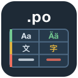
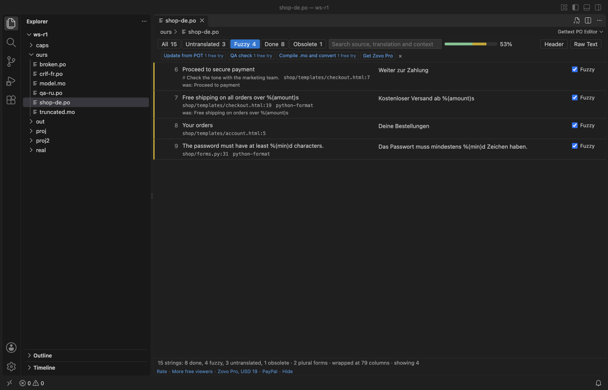

Gettext PO Editor & MO Viewer
Gettext PO Editor & MO Viewer, a VS Code extension by Zovo
Gettext editor for VS Code, by Zovo. Click a .po or .pot file and it opens as a translation table: source text on the left, translation on the right, with filters for untranslated and fuzzy strings. Save, and the file keeps its comments, obsolete entries, order and line wrapping. Compiled .mo files open read-only as the same table.
Free, MIT license. Needs VS Code 1.75.0 or newer. Extension ID zovo.zovo-gettext-editor, version 0.1.1.
Free, offline, no account. Zovo Pro: USD 19 once, for this and every other Zovo extension. It adds Update from POT, a QA check across all locales, and Compile .mo and convert, with 1 free try of each. Everything free stays free.

A real VS Code window running this extension on samples/shop-de.po, the sample that ships with it, with the Fuzzy filter on.
Free
- Open
.poand.potfiles as a table. Each row shows the context (msgctxt), the source text, the translation, translator comments, comments for translators and the source references. Plural strings get one field per plural form, labelled with example numbers from the file's plural rule (for Russian: form 0 for 1, 21, 31; form 1 for 2, 3, 4; form 2 for 0, 5, 6). - Filter by All, Untranslated, Fuzzy, Done and Obsolete, each with its count. The search looks in the source, the translation and the context at once.
- Translate in place: click a translation, type, and press Ctrl+Enter (Cmd+Enter) for the next one. Newlines, tabs and spaces at the start or end stay visible.
- Tick or untick Fuzzy on a string. The progress bar shows done and fuzzy strings.
- Edit the header: language, plural rule (with the forms it gives), translator and the other fields.
- Save safely. An edit rewrites only the lines of that one entry, wrapped like GNU gettext wraps them, or not wrapped if the file is not. Everything else stays byte for byte: comments, obsolete (
#~) entries, the order of entries, blank lines and line endings. A file you only open is never written. - Raw Text opens the same file in the normal text editor beside the table. Type in either one; undo and redo are VS Code's own and work across both.
- Open compiled
.mocatalogs read-only as the same table (both byte orders, plural forms and contexts). PO Text opens the catalog as.potext in a new tab. A.mofile that is not a gettext catalog (Modelica source uses.motoo) opens in the normal text editor. - See clear errors. A
.pofile with a syntax error opens read-only with the line of each error, and a broken.mofile shows the reason.
Quick start
- Install Gettext PO Editor & MO Viewer.
- Click a
.po,.potor.mofile in the Explorer. No file at hand? Run "Gettext: Open the Sample Translation" from the Command Palette. - Click Untranslated or Fuzzy, translate, then save with
Ctrl+S(Cmd+Son macOS).
Questions people ask
Is Gettext PO Editor & MO Viewer free?
Yes. Gettext PO Editor & MO Viewer is free and MIT licensed.
How do I install Gettext PO Editor & MO Viewer?
Click "Install in VS Code" above, or search for zovo.zovo-gettext-editor in the Extensions view.
How the save keeps your file
The table is a view of the text file, not a copy of it. When you change a translation, a fuzzy flag or a header field, the extension writes that one entry again and leaves every other line as it was. A changed string is wrapped at the width the file uses: 79 columns for files written by GNU gettext (msgmerge, msgcat), 76 for files written by Babel, and no wrapping for files that have none (GlotPress exports, for example).
We checked this on real files from Django, Sphinx and WordPress plugin translations. Each one comes back byte for byte when nothing changed, and when a fuzzy flag is set on every string and taken off again. The wrapping of a changed string matches GNU msgcat (gettext 1.0) on all 2,836 different strings in those files.
Zovo Pro tools (1 free try each)
- Update from POT: merge a new
.pottemplate into the.pofiles of the workspace, like msgmerge. The files of the same domain are ticked for you. Translations and translator comments stay; strings that changed get the translation of the closest old string, marked fuzzy, with the old source kept as a#|line; new strings come in untranslated; strings that left the template become obsolete#~entries at the end. Entries that did not change keep their lines exactly. A report lists what changed in each file. On our test files the result matched GNUmsgmerge --previousentry for entry (translation, fuzzy flag and obsolete entries). - QA check: one file, a folder or every
.pofile in the workspace. It finds placeholders that are missing or extra in the translation (%s,%1$d,%(name)s,{name},{0}, ICU arguments such as{count, plural, ...}), HTML tags that differ, a newline at the start or end on one side only, and missing or empty plural forms, and counts untranslated and fuzzy strings. The problems go to the Problems panel and into a Markdown or CSV report. - Compile .mo and convert: compile the
.pofile to a.mocatalog next to it (fuzzy and untranslated strings are left out, like msgfmt does; GNU msgunfmt and Python'sgettextmodule read the catalog), export it to XLIFF 1.2 or CSV for translators, and import the translated XLIFF or CSV back. The import matches strings by context and source text and changes only translations and the fuzzy flag, as one edit you can undo.
The first use of each tool is free on this computer. After that, a click on the tool shows what Zovo Pro is and how to get it; nothing appears on its own. One key turns on Pro in every Zovo extension, for life.
Settings
gettextEditor.showProTools: show the Pro tools in the Command Palette, the Explorer menu and the table toolbar (default on).gettextEditor.askForRating: ask once for a rating after translation files opened without an error at two times at least 30 minutes apart (default on).gettextEditor.showSupportLinks: the small Rate, More free tools and Zovo Pro links under the table (default on).
Privacy
No network requests, no telemetry, no account. Parsing, the table, the merge, the QA check and the .mo writer all run inside VS Code. The only links that open a web page are the ones you click (rating, Zovo Pro).
Known limits
- The table shows strings 300 at a time; a "Show more" button at the end loads the next ones. The filters and the search always cover the whole file.
- The editor reads and writes UTF-8. A
.pofile in another charset (the header sayscharset=ISO-8859-1, for example) opens with its non-ASCII letters wrong; convert it to UTF-8 first..mofiles in other charsets are read correctly. - Export and import cover XLIFF 1.2 and CSV. XLIFF 2.0, XLSX and JSON are not supported.
- An XLIFF import keeps the text of inline tags (
<g>,<ph>and the like) and drops the tags themselves.
License
MIT for this extension. It bundles no third-party code; see THIRD-PARTY-NOTICES.md.
Made by Zovo. Questions and bugs: GitHub issues.
Install Gettext PO Editor & MO Viewer
Click the button to open VS Code and install it, or press Ctrl+P (Cmd+P on macOS) in VS Code and run ext install zovo.zovo-gettext-editor.
Free, MIT license. Needs VS Code 1.75.0 or newer. Extension ID zovo.zovo-gettext-editor, version 0.1.1.
Source code and issues are on GitHub.
Zovo Pro and support
Zovo Pro: USD 19 once, every Zovo viewer. It turns on the Pro tools in this extension and in the other Zovo extensions you use. The free features stay free.
After a card payment your license key shows on the next page. Paste it with the command "Zovo Pro: Enter a key".
You can also support the work with no Pro:
Need your format supported?
Open a format request with a sample file, and I reply there whether it can be done. For USD 299 once, through this GitHub Sponsors tier, I add your file format or a missing feature to this extension, with tests, within 7 days.